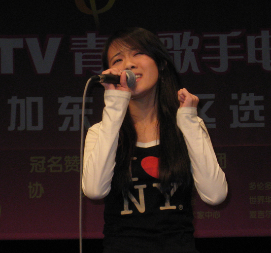
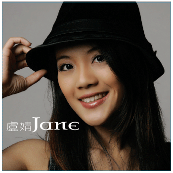
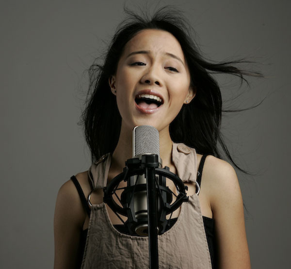
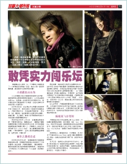
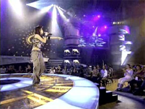
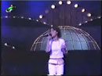
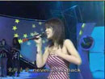

第十三届CCTV青年歌手大奖赛美洲赛区决赛
卢婧进入前三名
盧婧原創 CD專輯

盧婧的第一張原創CD国语大碟《盧婧Jane》，2007年9月2日在加拿大多倫多新鲜出炉。这张精心打造的全新专辑，汇聚盧婧音樂才華和多倫多顶级音乐人制作人的倾情奉献，首次炫目登場，溫暖歌迷的耳朵，激盪每一顆熱愛音樂的靈魂。CD每张零售價:$12.99 CAD，可到 Yamaha Music Gallery 购买，地址: 100 Steeles Ave West (Yonge & Steeles)
盧婧CD专辑每张Retail: $12.99 CAD，銷售網絡正在建立，目前銷售點有:
- YAMAHA 琴行 Yamaha Music Gallery
地址: 100 Steeles Ave West (Yonge St & Steeles Ave)
電話: (905)731-7725 - 199 STUDIOS
地址: 199 Sheppard Avenue West Toronto
電話: (416)226-4204 - 小小心意禮品圖書店
With Feelings Gifts & Books
地址: 9019 Bayview Ave Unit#18B
Richmond Hill (Bayview & Blackmore)
電話: (905)889-0383 - 溫哥華列治文 MX Square (a.k.a. MX2)
地址: #412- 5300 No. 3 Road Lansdowne Center, Richmond
電話: 604-273-9292
Band Member:
Leader and Keyboards: Cory Noziglia; Guitar: Aaron Bales; Bass: Michael Goutman; Drums: Aaron Spink.
聲樂教學課程

Jing Lu is now offering lessons in proper vocal techniques of various musical styles. Students at all levels are welcome!
Jing Lu is willing to work with students towards a goal such as audition, competition, performance or simply for fun.!
Areas of Teaching:
Skill development which include pitch accuracy, range and breathing.
Musicianship, style and stage presentation in preparation for audition and competitions.
Repertoire study and interpretation.
Live performing skill including achieving dynamics and microphone technique etc.
Development of a healthier vocal habit which prevents sore throat and avoid damage to your vocal chords.
Qualification:
Bachelor of Fine Art, York University. Maj. Vocal.
Eight years of private vocal training from top teachers in Toronto.
Winner of numberous singing awards.
Experienced performer,featured in major concert with audience up to 50 thousand people.
Teaching Location:
199 Studios
Adress: 199 Sheppard Ave West, North York (near the intersection of Yonge and Sheppard, free parking available)
Rates:
Rates are affordable, and available upon request, please email to jinglumusic@yahoo.ca
歌手盧婧

加拿大都市报Canadian City Post 文章《敢凭实力闯乐坛》

2007年4月20日, 在台湾台中大甲露天体育场举行的最盛大《妈祖之光·相约东南》大型综艺电视晚会上，卢婧与两岸天王、天后级歌手蔡依林、 罗大佑、SHE、潘玮珀、杨丞琳等共15位歌手同台演唱，表演火爆, 引起轰动。 晚会吸引了5万多名观众涌向现场，并通过福建海峡电视台、 福建电视台东南卫视、台湾东森电视台、中天电视台、年代电视台向全球卫星直播或实况录播，台湾岛内丰盟、西海岸、大屯、 威达等四家有线电视台也同步向当地逾200万户民众进行转播。

2006年11月15日，在万众瞩目的《中华首届闽南语歌曲创作演唱大赛》上，来自加拿大的女歌手卢婧, 激情四射, 劲歌热舞, 以一首自己作詞作曲《Let's Party Now》一举夺得季军！ 主持人吴宗宪盛赞歌手的演唱是“金声玉韵、天籁之音”。中华首届闽南语歌曲创作演唱大赛由福建省委宣传部、中国音乐家协会、福建省台办、 福建省广播影视集团和晋江市委市政府共同主办, 共设福州、厦门、漳州、泉州以及北京、台北、多伦多、洛杉机、新加坡、吉隆坡等10几个分赛区。

2001年10月13日，15岁的卢婧在赢得《新秀歌唱大赛多伦多选拔赛》冠军后, 代表多伦多参加在中国广东省举行的《2001年全球华人新秀歌唱大赛》， 以一曲热情奔放的《听海》脱颖而出，夺得季军。由于歌唱大赛通过广东卫视向海内外现场直播，卢婧也就一夜之间成为海内外华人心中的“明星”。
2002年12月28日，在《九洲华人歌唱大赛总决赛》中, 卢婧以一首李玟的《 Sunny Day 》脱颖而出，赢得全场总冠军。 九洲华人歌唱大赛总决赛由加拿大多伦多华人艺术中心、多伦多九洲艺苑主办，加拿大中国专业妇女协会、多伦多大学中国学生学者联谊会、心意网、方圆俱乐部协办。

2003年9月9日至14日，首届施琅杯中华闽南语歌曲电视大赛在福建东南电视台先后进行了三场决赛和一场总决赛, 加拿大的卢婧获得铜奖, 最佳潜质奖, 最受歡迎歌手獎﹐及創作歌曲評委特別獎。 卢婧创作的《不再回頭》与大赛评出的“十大金曲”录成唱片发行。这次大赛在全球华人圈，尤是新加坡、马来西亚、加拿大等地乡亲中引起很大的反响。